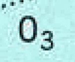
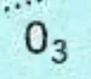

OpenGL
What is OpenGL? An Overview
OpenGL is an open standard, cross platform, advanced graphic library. It uses the graphic cards processor (GPU) and memory, to speed up applications. With OpenCPN a user with a typical modern graphic card will have an enhanced experience. Much faster and smoother zooming and panning as well as clearer and sharper chart rendering.
In OpenCPN, OpenGL is a choice; however. the old graphic engine is still there. OpenGL will not work for everyone. Performance may not be improved with embedded graphics chips, often found in older laptops and netbooks.
Microsoft has gone from support to hostility towards OpenGL. There is currently a lot of trouble in Windows for all OpenGL applications, not just OpenCPN. OpenCPN has been forced to disable a handful of OpenGL features for all Intel OpenGL graphics drivers on Windows, for example. Also earlier Intel HD Graphics chipsets do not fully support all of the OpenGL features. Updating OpenGL drivers commonly solves many problems. Find the right updated drivers by using the Graphic Card, Intel or your Laptop Manufacturer’s support.
Mac OS X has full supports for OpenGL.
For Linux the situation is slightly different. Linux supports OpenGL, as it generally tends to support open standards. The user is however dependent on a driver from the graphic cards maker, and their support for OpenGL. This may change with projects like nouveau, a free driver for nVidias cards.
 
Without OpenGL and With OpenGL
Heavy over zooming reveals some of the secrets behind OpenGL
Why introduce OpenGL in OpenCPN?
The main reasons are:
-
Better performance, leveraging modern PC graphics cards that are ubiquitous and powerful.
-
Better "eye candy", such as smooth zoom and pan, with little impact on responsiveness.
-
Future cross-platform support (e.g Android/IOS)
-
Some features depends on OpenGL, such as horizontal text and numbers on skewed (course up) vectorcharts.
Is OpenGL a good choice for everyone?
OpenCPNs performance with OpenGL is highly dependent upon your graphics hardware and drivers.
-
On some systems using Intel HD Graphics adapters, especially running 64bit editions of Windows 7, OpenCPN gets killed due to errors in the display adapter drivers. You may try to get updated drivers or as a workaround, on Windows run OpenCPN - no OpenGL from Start menu. On all the platforms, you can use the -no_opengl /opencpn/manual_advanced/program/command.html switch while starting the program to run it with OpenGL disabled.
-
Some graphics chip sets (e.g.intel 945G) have rather poor OpenGL driver support, so that we cannot fully utilize the hardware acceleration potential of these systems.
-
nVidia graphics, even very old cards, seem to perform very well.
-
Performance may not be improved with embedded graphics chips as often found in older laptops and netbooks.
-
There is a lot of trouble with OpenGL on Vista and W7. Microsoft implemented a new screen compositing model for Vista and later, which "broke" many OpenGL apps
-
Conclusion:Using OpenGL with OpenCPN will be a significant upgrade for some users of OpenCPN, but OpenGL may not be "better" for everyone’s OCPN application.
-
So, this is the user’s decision. If OpenGL works better for you, then use it. If not, the old DC based graphics render system is still in place.
Start using OpenGL
-
Find the latest driver for your graphic card. The driver that came with your operating system, is not likely to be the best. Start looking at your graphic card makers home page.
-
Go to the ToolBox→Settings and tick the two boxes "Use Accelerated Graphics(OpenGL)" and "Enable Smooth Panning/Zooming". Read all the details in the Toolbar > Options > Display Tab.
Other tricks
If you have a lot of graphic memory, or very little, try to add the following to your config (.ini on windows) file:
[Settings] .... GPUMemorySize=nnn
where nnn is graphics card memory size, in MBytes. 256 MBytes is the default.
Supplementary Software to test Graphics Adapter Opengl compatibility
Troubles in OpenGL mode?**
-
Make sure the proper updated drivers for your graphics card.
-
Earlier Intel HP Graphics, chips do not offer full OpenGL support. This is where the opengl issues tend to occur.
-
One good option is to get a newer graphics board that supports OpenGL fully. (I would suggest Nvidia, but there will be various opions about that.)
-
Another option is to try adjusting the OpenCPN OpenGL settings, unchecking all the advanced features and testing.
-
Then if there are still difficulties, running this software may show exactly what the problem is.
This free adapter testing software is for various operating systems, including Windows 32bit and 64bit.
This software tool tests your graphics card capabilities and makes a report log. It is very useful in tracking down particular problems with OpenGL on a given system. The Developers can then help determine what is wrong.
However when other software like GoogleEarth works OK with OpenGL on, then there are possibly other reasons why OpenCPN fails, related to the Opencpn OpenGL implementation. There are many, many graphics cards and they have differing capabilities and sometimes the Opencpn opengl implementation has to be adjusted for a particular card.